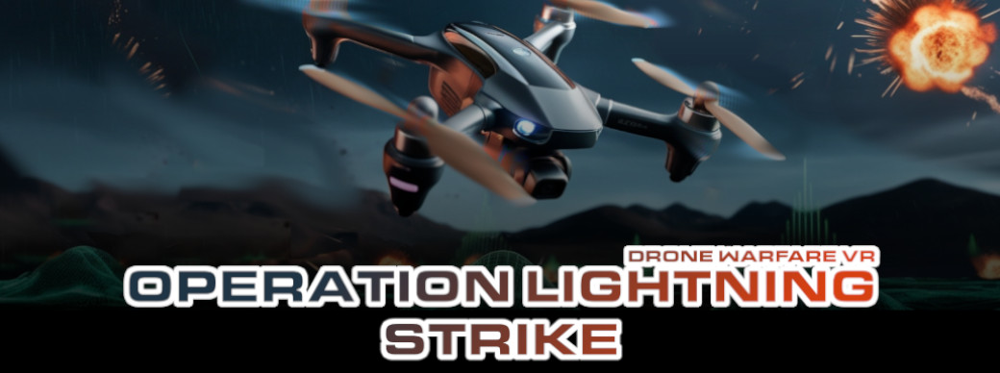
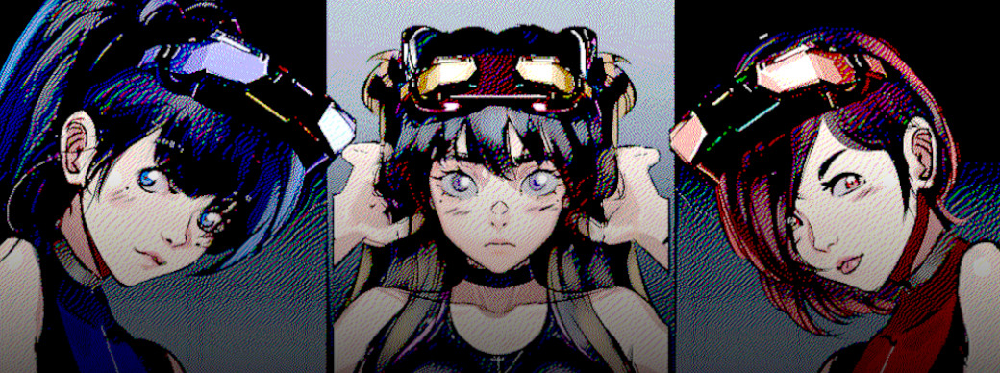
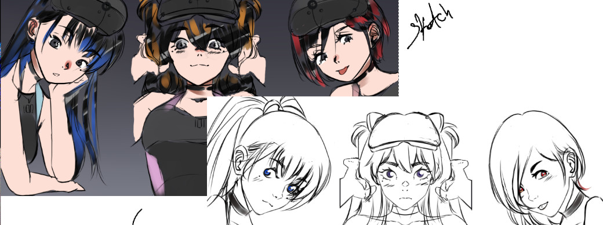

Project Presentation:
Operation Lightning Strike: Drone Warfare Simulator was born from the vision of allowing anyone with an Oculus to experience the thrill and precision of piloting an FPV (First Person View) drone with the same natural feel and freedom as in real life. This simulator is not only a realistic training tool for drone enthusiasts but also delivers an exciting campaign packed with action, strategy, and challenges across various scenarios that simulate modern warfare operations.
Personal story:

As Co-Founder of Null Vertex Interactive, I bring over a decade of experience in virtual reality (VR) and augmented reality (AR) development, starting with the first Oculus DK1. My journey has been filled with creating immersive experiences and pushing the boundaries of what’s possible in digital worlds. Null Vertex Interactive was born out of a desire to build something meaningful a studio that values and supports its collaborators. Like many others in the gaming industry, our team was deeply affected by the wave of layoffs in 2023. This experience inspired us to create a space where digital artisans: programmers, artists, composers, designers, and more can feel cared for and empowered. Our mission is to create new opportunities for talented individuals while staying true to our core human values. We believe in fostering creativity, collaboration, and respect, ensuring that every member of our team can thrive and contribute to projects that inspire and excite.
Challenge:
We know that VR development is expensive, but this initial boost through Kickstarter could help us develop the first chapter of the three we have planned for this project. Our goal is twofold: to bring joy to our supporters by delivering an experience that feels incredibly close to piloting a real drone, and to provide opportunities for our team of talented digital artisans (programmers, artists, composers, and designers) who pour their passion and skills into making this vision a reality. With your support, we can overcome the financial challenges of VR development and create something truly special for both our community and our team.
Our Game:
Operation Lightning Strike: Drone Warfare VR Simulator draws inspiration from the intensity and strategy of classic aerial combat games like Ace Combat and Nintendo’s Starfox. These titles have influenced us to create an exciting and dynamic experience, combining the thrill of aerial battles with the precision and freedom of FPV drones.
Unique Value Proposition:
We deliver an authentic drone flight simulation, something that hasn’t been fully explored in the world of VR gaming.An immersive story mode with challenging missions and varied scenarios.Each mission will be unique, featuring unexpected twists that will force you to adapt to new conditions and devise fresh strategies.Although we are a smaller team, we prioritize quality and aim to create an experience that satisfies both drone enthusiasts and action game lovers.
The Story (Lore): A Battle for Survival and Soul:
In the distant future, the peaceful planet of Astralis thrives as a beacon of life, health, and spirituality. Known across the galaxy for its advanced pharmaceutical technology, Astralis has always chosen harmony over conflict, trading its innovations to heal and nurture other worlds. But everything changes when Tenebris, a decaying planet driven by desperation, arrives with an offer: weapons in exchange for Astralis’ precious natural resources. When the Astralians refuse, upholding their pacifist ideals, Tenebris reveals its true intentions, conquest by force. The Tenebrians, once human like the Astralians, have sacrificed their humanity in their fear of death. Now, they are little more than cyborgs, their organic brains fused with cold, unfeeling machinery. Their planet, consumed by their insatiable hunger for technology to prolong their lives, has become a barren wasteland. With nothing left to lose, they set their sights on Astralis, threatening to destroy its way of life and plunder its resources. As a skilled drone pilot, you are Astralis’ last hope. Armed with cutting-edge FPV drones, you must defend your home, outmaneuver the relentless Tenebrian forces, and uncover the truth behind their descent into darkness. The fate of Astralis and the soul of what it means to be human rests in your hands.
Characters
Spectre: is the master of electromagnetic warfare. Specializing in creating electromagnetic fields, this tactical ally will disable enemy weapons, disrupt communications, and give you the edge you need to approach your target undetected. While others rely on brute force, Spectre turns the battlefield itself into your greatest weapon."
Viper: is the team's sharpshooter, a cold and calculated markswoman who never misses her target. With her expertise, she can modify your drone to carry an impressive amount of ammunition, ensuring you're always ready for a fight. But her true power lies in her secret ability: piercing through even the toughest armor, making her the ultimate weapon against heavily fortified enemies.
Aelara: is the master of holographic deception. With her cutting-edge technology, she can create a perfect holographic copy of yourself, confusing enemies and giving you the upper hand in battle. For a limited time, this decoy will draw fire, misdirect opponents, and create opportunities for you to strike. In a world of drones and warfare, Aelara’s illusions are the ultimate weapon of distraction.
Art
Stretch Goal: More Rewards for the Community !
Our initial goal is 1,200 USD, which will allow us to develop the first chapter of Operation Lightning Strike: Drone Warfare Simulator. if we reach 2,500 USD, we will unlock additional rewards for our amazing community !!! like:
-Exclusive in-game content: Unique drone skins, custom decals, or special missions.
-A port version for windows PCVR: play from your pc with steamVR compatible headset.
-Behind-the-scenes access: Early looks at development updates, concept art, and more.
-No need internet conexion: The freedom to play offline whenever and wherever you want.
-No Intrusive Software: Full ownership of your copy.
-Community involvement: Opportunities for backers to suggest ideas or features for future updates.